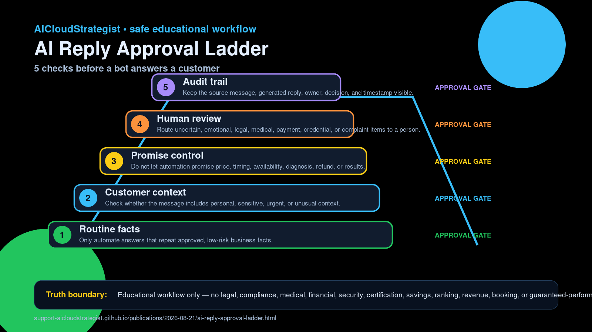

Evening publication · AI reply operations
AI Reply Approval Ladder: 5 checks before a bot answers a customer
A safe educational ladder for owners to decide which customer messages can be automated, which need review, and which must stay human-only.
Request a free business review
Practical checklist
- Routine facts: Only automate answers that repeat approved, low-risk business facts.
- Customer context: Check whether the message includes personal, sensitive, urgent, or unusual context.
- Promise control: Do not let automation promise price, timing, availability, diagnosis, refund, or results.
- Human review: Route uncertain, emotional, legal, medical, payment, credential, or complaint items to a person.
- Audit trail: Keep the source message, generated reply, owner, decision, and timestamp visible.
Use this ladder before giving an AI assistant permission to answer customers. The safer path is to automate routine, approved facts and pause anything uncertain for a human owner.
Educational workflow only — no legal, compliance, medical, financial, security, certification, savings, ranking, revenue, booking, or guaranteed-performance advice.